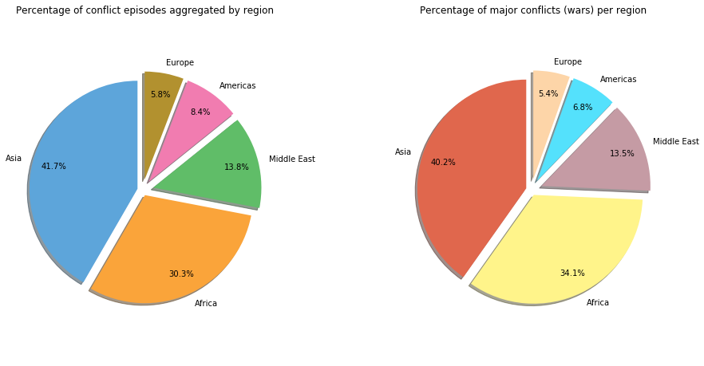
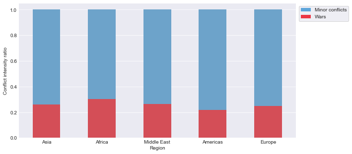
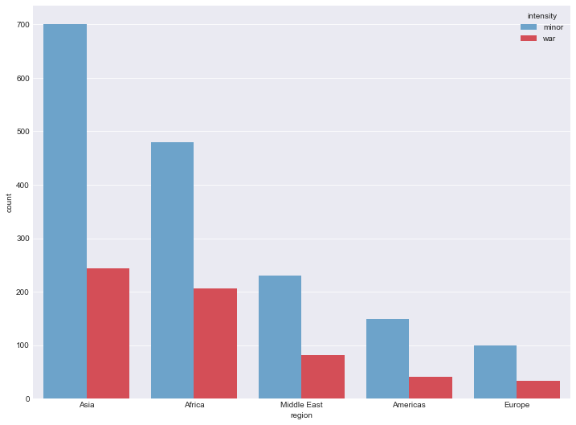
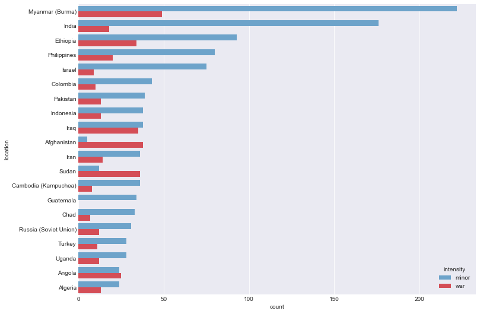
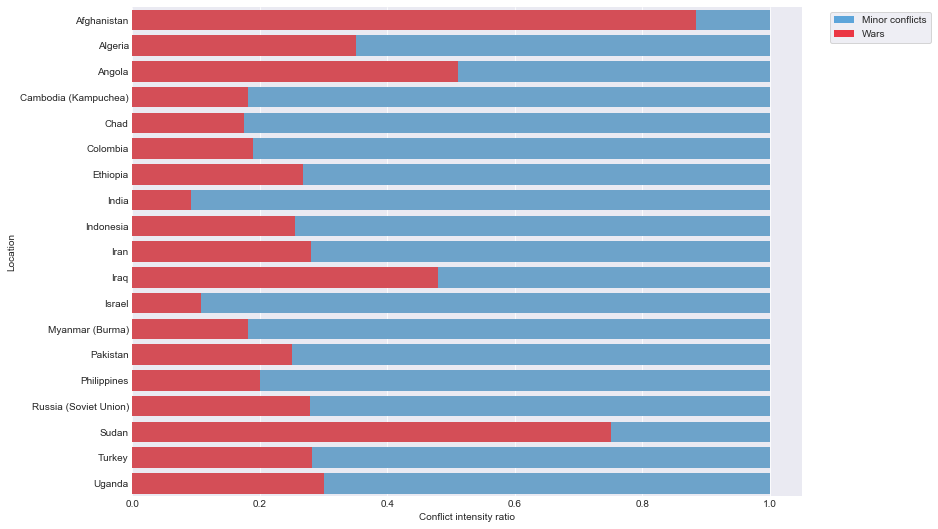
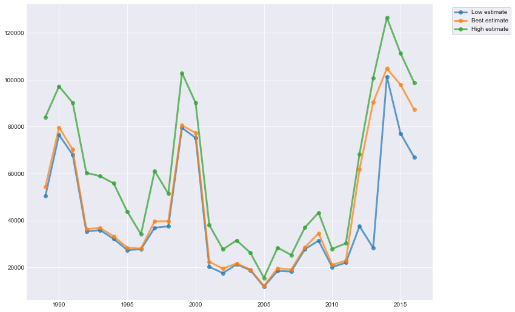
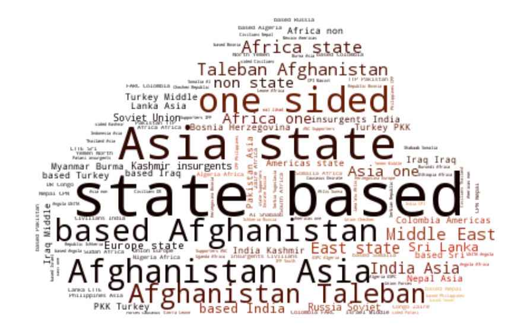

Brace yourself for a long story through conflict history!
Does the image above look familiar? I'm sure that if you're a strategy-game lover as myself it does ring a bell or two. Do you also sometimes have the feeling that leaders of countries and organised group played strategy games so much that they got carried away and eventually mistook the real map of the World for a campaign map?
Seemingly whimsical, the title of this story encloses the harsh reality of how astoundingly primitive we are in the 21st century and how little has actually changed since Medieval times. We attempt to modernise our society in many aspects, invent new technology to make everyday life more pleasant, but at the end of the day, we witness so much violence, intolerance and hatred. Independent of the fact whether it is an inter-country conflict for territory, an organisation requesting rights, a state or region fighting for independence, the truth is these clashes result in numerous casualties, direct or collateral, ruined societies, destroyed lives and terrible loss. And there are much more sparkles on the edge of kindling a fire.
How often does it happen to stand surprised or even shocked by a disturbing incident that had taken place somewhere in the World, but you didn't know about it, you learnt it by accident? Of course, it's impossible to aware of all the events, especially since they're not always readily available. Some of them receive a large media coverage, some unfortunately aren't reported at all.
Let's make an attempt at uncovering the shocking reality about world conflicts that few people know about because it may not be or have been in the spotlight. Hopefully, observing the information visualised in a nicely presentable way will help raise awareness of what has been happening in recent history or at the present moment, and bring incentive to start building an improved version of the World.
“Even today we raise our hand against our brother... We have perfected our weapons, our conscience has fallen asleep, and we have sharpened our ideas to justify ourselves as if it were normal we continue to sow destruction, pain, death. Violence and war lead only to death.”
Pope Francis
Conflicts by region
As every good scientist, I know I should give credit where credit is due. And I'd like to give a huge praise to the people at Uppsala Conflict Data Program (UCDP) for doing an excellent job creating the conflict event datasets which are publicly available and can be downloaded from their website. Feel free to explore them and your curious mind will be very thankful.
Let us take a top-down approach and start with an analysis on the most aggregated level – a region, which constitutes a territory size equal to an entire continent or large part of a continent. The UCDP datasets aggregate conflict areas into 5 regions: Asia, Africa, Middle East, Americas and Europe. Of course, there are certain conflicts that are not contained and localised within a single region, but span multiple regions. One such example is the 2003 interstate conflict between Australia, US, and UK on the one side and Iraq on the other, which involves Europe, Middle East, Asia (for some reason Australia is considered as part of the Asiatic region), and the Americas. Another one is NATO interventions in Afghanistan. Naturally, coalitions of that sort include countries belonging to different regions. Still, as shown in the table below, the vast majority of conflict clashes, or more precisely 91.5%, are limited to a single region.
| Region | Number of conflicts (1946-2016) |
|---|---|
| Asia | 944 |
| Africa | 687 |
| Middle East | 313 |
| Americas | 190 |
| Europe | 132 |
| Europe, Asia | 4 |
| Europe, Middle East | 3 |
| Europe, Asia, Americas | 1 |
| Europe, Middle East, Asia, Americas | 1 |
| Europe, Africa | 1 |
| Europe, Americas | 1 |
I'd say it's already a good time to start with some visualisation. Here are some pie plots that represent much better the tabular data from above. One note to make is that multiregional conflicts were ignored for the sake of perspicuity, which doesn't affect the bigger picture since they're present in a much smaller number.
The above pie charts help visualise the total percentage of conflict episodes and the percentage of war events by region. The plot on the left takes into account the total number of conflict episodes registered in the period 1946-2016, regardless of their intensity, while the pie plot on the right focuses on the major incidents which resulted in more than 1'000 battle-related casualties. Why 1'000? Because if you look at the definition of war in the UCDP dictionary, it will say that conflicts are considered as wars if the annual number of battle-related deaths surpasses 1'000.
The conclusion that can be drawn, judging by the numbers, is that the number of major incidents contributes almost equally to the total in every World region. There isn't a single region that perhaps had a relatively large share of conflicts, but all or the great majority of them being minor.
The only (barely) noticeable differences, that differ by more than one percent point, are Africa and the Americas. Africa has a larger share of wars than conflicts in general, while it is the opposite for the Americas region. This becomes more obvious from the stacked bar plot below, which shows that the percentage of wars over the total number of conflicts in Africa is 30%, which is larger than any other region where the ratio converges towards one quarter.
The bar plot in the figure below shows the counts of conflict episodes split according to their severity, i.e. minor conflicts or wars. Just a little reminder, minor conflicts are conflict episodes where the number of deaths is between 25 and 999 (inclusive), whereas for an event to be considered a war the number of casualties must rise above 1'000.
At the end, before concluding this section, I'd like to present one more table that shows the number of wars per region. It's good to take a look at these numbers, just for completeness, as they were used to produce the plots presented above.
| Region | Number of wars (1946-2016) |
|---|---|
| Asia | 244 |
| Africa | 207 |
| Middle East | 82 |
| Americas | 41 |
| Europe | 33 |
“It is forbidden to kill; therefore all murderers are punished unless they kill in large numbers and to the sound of trumpets.”
Voltaire
Conflicts by country
As a next step, we further disaggregate the data to the level of individual countries. We are interested in seeing which countries had the largest number of conflict episodes in the time period between 1946 and 2016. From the names of the countries who made into the top 10 and taken into consideration the rather large conflict count they experienced on their territory, it's no wonder the most prominent conflict regions during this period were Asia and the Middle East.
Feel free to click on the countries' names in order to see the number of conflict episodes for that particular location
Now, in the interpretation of this data, it is important to have in mind that these countries didn't necessarily take part in the conflict as an actor, but all of the episodes happened on their territory, which undoubtedly lead to them suffering the consequences of those events.
The next figure shows the top 20 locations in the World with the largest number of conflict episode events. The total number is then broken down into two components based on the episode intensity level, namely into minor conflicts and wars. It can be easily seen that Myanmar (Burma) is in the lead, both in the number of minor conflicts and wars on its territory, even though the number of wars is significantly smaller compared to the number of minor conflicts.
It is also worth mentioning that Afghanistan, Sudan and Angola have a higher number of wars than minor incidents in their conflict history, with a percentage as high as 88% for Afghanistan and 75% for Sudan out of the total.
The proportion of war episodes in the total number of conflict events for the top locations is more explicitly presented in the following stacked bar plot figure.
“The world is full enough of hurts and mischances without wars to multiply them.”
J.R.R. Tolkien, The Return of the King
A timeline of casualties
We saw the distribution of the number of conflicts per region and per country, so now it will be useful to examine the number of battle-related deaths caused by those conflicts. Battle-related deaths is simply a way of saying number of suffered casualties and it's computed as the sum of losses suffered by each of the two sides, reported civilian deaths and other deaths connected to the event which could not be classified in any of the previous categories. Since the original data comes from a different number of sources, such as news agencies reporting for the event, it is not always trivial to get a good estimate on the number of fatalities. Therefore, there are three numbers in the data: low estimate, best estimate and high estimate. The low and the high estimate represent a reasonable range for the casualties value, while the best estimate is actually the most reliable one. Sadly, the number of losses is not available prior to 1989.
There are three very prominent peeks in the shown timeline for the years 1990, 1999 and 2014, where the low and the best estimates which are pretty close to each other indicate approximately 80'000 fatalies for the first two years and go slightly above 100'000 for 2014. If we look at the high estimates, which according to the UCDP methodology of creating the datasets are not an exaggerated, but on the contrary rather conservative figure, the number of battle-related deaths rises well above 120'000 for the year 2014, which is by far the worst year in terms of casualties for the given period between 1989 and 2016. The available data shows a decreasing tendency after that, but since there are only two more years after 2014, it is impossible to precisely determine the trend. Even though the slope of the line is large, the absolute value of the figures is among the largest. Unfortunately, drawing a conslusion that conflicts might be settling in the period to come is far-fetched as there is simply not enough evidence to suggest that.
“Only the dead have seen the end of war.”
Plato
Conflict actors relationships
One of the major points I'd like to make in this post is visualising a network structure of interconnected nodes which represent conflicted sides based on the UCDP Georeferenced Event Dataset. We will see two separate network plots: state-based and non-state conflict graph. Here I feel I should explain some terminology. The former represents the conflicts where at least one party is a government of a country, whereas the latter depicts relations between organised groups where no government was involved on either side. Also, in order to keep the plots as simple as possible, only the primary actors in a conflict were included, i.e. the figure doesn't include supporters or allies who fought together with the primary actors. Both graphs cover the time period between 1989 and 2016, same as the battle-related deaths timeline chart.
A useful information to include in the plot is the intensity of the conflict, i.e. whether it was a minor conflict with a number of suffered casualties that ranged between 25 and 1'000 for the entire period the conflict was active or a war, which means the number of battle-related deaths surpassed 1'000. Of course, it is interesting to obtain the cumulative conflict intensity taking into account the entire period the conflict was active and not just individual episodes or annual aggregates.
A node (circle) in the graph corresponds to a single actor in a conflict, which might be a government of a country or an organised group of any type. The size of each node in the plot depends on what is technically called the degree of that node. Simply stated, the degree of the node is the number of conflicts the corresponding actor has been involved in during the given time period. In addition, the colour of each node gives an intuition on the number of casualties due to battles each side has suffered, ranging from light yellow when the numbers are small, to dark red nuances as the number of deaths grows.
An edge (line going from one circle to the other) indicates an existent conflict between the sides represented by the two nodes. They are colour-coded for the conflict intensity. More specifically, minor conflicts which count between 25 and 1'000 battle-related deaths are shown by light blue, whereas major conflicts or wars which surpass the 1'000 casualties limit are shown in a dark blue colour.
The plot is interactive. Hovering over a node shows a label with the name and with more detailed information about the entity. There is also a possibility to pan around, zoom in and out on the entire plot or a selected region to analyse it in more detail. For a larger version of the graph plot, click here.
The total number of actors is 405 and they were involved in 355 state-based conflicts. Of course, the minimum number of conflicts a side can be involved in is 1, otherwise it would not have been depicted in the figure. The largest number of conflicts a single side has been involved in is 24.
The above graph visualisation depicts the non-state conflict interactions between actors where there is no government of a state involved. The opposing sides are different types of organised groups (formally or informally organised). The total number of actors is 761 and they were involved in 575 non-state conflicts. Of course, the minimum number of conflicts a side can be involved in is 1, otherwise it would not have been depicted in the figure. The largest number of conflicts a single side has been involved in is 18.
As perhaps expected, the number of nodes in the non-state conflict graph is noticeably greater than the number of nodes in the case when one of the conflicted sides is the Government of a state. Of course, there is no limitation to the number of organisations that can be formed and that can enter a conflict for some reason and over a certain disagreement. Also, organisations are much more dynamic in their creation and cease of existence, whereas for states it is a much longer and slower process that can take decades or even centuries. In addition, the latter graph is much richer in the number of edges, i.e. the interactions between the parties, but it is also evident that, though more numerous, the interactions are in the vast majority of less gravity as they are considered minor conflicts according to the UCDP criteria.
The bigger number of war conflicts together with the much smaller number of connected components in the state-based conflict graph compared to the non-state graph is a clear indication that conflicts which involve a government as a conflicted side tend to have larger dimensions, they are not localised, but involve many other organisations and states. Much of it results from the fact that states have significantly more resources and a more organised way of warfare. Also, they are usually the primary target of many organisations. As an additional point, countries have international relations and interests which are global, whereas the activities of organised groups usually have a much more limited target, concern only a particular region or population group based on certain characteristics, etc.
Here we cannot use the argument that states have a larger number of conflicts and battle-related deaths due to their longer history as all the numbers are related to the time period between 1989 and 2016. However, one can argue that this is a sufficiently large time period for an organised group to form, reform, merge with other groups, form fractions, rename, cease to exist, etc., which breaks the continuity when analysing its activity. It is very difficult to differentiate whether the organised group should be considered the same or whether the conflict is the same once some of the previously mentioned events occur. As stated in the previous paragraph, clashes between organised groups are much smaller in magnitude, which is easily observed by the number of suffered casualties on each side.
The above plot simply zooms-in on the largest connected component of the state-based conflict graph. It is remarkable that at the centre of this component is the node representation of IS (Islamic State), something that is very current and actual. The figure shows the 34'830 casualties that IS has suffered during the 15 conflicts it is involved in, mostly with countries from the Middle East and North Africa.
“The supreme art of war is to subdue the enemy without fighting.”
Sun Tzu, The Art of War
Battle locations map
Another informative visualisation which implies taking advantage of the fine-grained geo-coding information available in the UCDP Georeferenced Event Dataset is creating an interactive map with markers pinpointing the geographical locations where there was an armed conflict episode in the period 1989-2016. However, the dataset consists of 135'181 distinct conflict episodes, 38'657 of which are unique battles that took part on a particular location during a conflict. Therefore, there are 38'657 unique locations which need to be represented on the map somehow. This is a huge number of points on the map. In order to reduce the crowdedness, I decided to take the largest battle from every conflict and depict only that one on the interactive map. The "largest" battle is simply the one that resulted in the largest number of casualties according to the best estimate. This produces 997 pins, which is more feasible and clearer to analyse.
The map is interactive, which means the markers can be clicked on. Hovering over a cluster of markers highlights a polygon area on the map indicating the positions of the markers it is grouping. Clicking on a cluster of markers automatically zooms in and shows smaller clusters or individual markers. Clicking on an individual marker displays the so-called battle card with useful information about each battle. For a full-size version of the map, click here.
The styling of the maps is intentionally chosen to include only the smallest level of details and the most necessary information in order to ensure focus on the markers and the goal of the map, which is to present the battle locations for different conflicts on the World map. To improve visibility and omit unnecessary information and crowding on a smaller zoom level, the markers are grouped into clusters. Using the plus and minus signs on the map (or any other way to control the zoom level) will reveal the individual locations of a battle. The colour of the circle indicating a marker cluster ranges from green to orange/red as the number of markers in the group is growing.
A second interactive map shows the 200 largest battle locations, but not aggregated by conflict. It focuses on the places where the largest number of fatalities was observed following a violent event.
The map is interactive, which means the markers can be clicked on. Hovering over a cluster of markers highlights a polygon area on the map indicating the positions of the markers it is grouping. Clicking on a cluster of markers automatically zooms in and shows smaller clusters or individual markers. Clicking on an individual marker displays the so-called battle card with useful information about each battle. For a full-size version of the map, click here.
“What difference does it make to the dead, the orphans and the homeless, whether the mad destruction is wrought under the name of totalitarianism or in the holy name of liberty or democracy?”
Mahatma Gandhi
Internal conflict index
Inevitably, there are two question that naturally appear when doing an analysis like the one presented here:
- How do we identify "problematic" regions on the World map based with recent or on-going conflicts?
- How do we rate regions based on the history of conflicts they were involved in and their respective magnitude?
In order to rate the countries, we need to have a kind of quantitative measure used for comparison. One way of expressing the internal and external conflict state of a country numerically is to use the Global Peace Index (GPI) measure. Nevertheless, GPI actually uses UCDP datasets such as UCDP Armed Conflict Dataset and UCDP Battle-related Deaths Dataset. Of course, this is a well established methodology, but requires many more additional sources of data, which means it will not be representative of the datasets we have in hand. Therefore, we will develop a strategy of computing a so-called internal conflict index which will give a rough idea of where each country stands in terms of internal peace on the global scale.
It is important to mention however that the internal conflict index is a simple way to combine all the values available for a country: number of conflicts, time since last conflict, number of casualties and intensity of the conflict. It is not a scientific measure, it does not follow an established and prooven methodology, nor the weights have been derived or determined by domain experts. What we need is a means to visualise countries on the map relative to one another, taking into respect the data available.
First, to give some context to the variables used to compute the index.
- Intensity weight: The cumulative intensity of a conflict is converted into a weighting factor where wars are weighted by a factor of 1 and minor conflicts by 0.3, due to a relative difference in gravity. This weight is then used as a factor in an attempt to say that a country recuperates from a minor conflict more easily, but it takes a lot longer after a major conflict.
- Duration: The year span between the dates of the first and the last record of a conflict episode. This value is proportional to the internal conflict index, which makes sence since usually the shorter the conflicts are, the less damage they leave behind. The value is scaled to be in the range [0,1].
- Weighted deaths: In order to take into account all the different provided death estimates, a weighted average is performed, such that the best estimate is given a weight of 0.5 and the low and high account for 0.25 each. The greater the number of deaths is, the larger the intensity and severity of the conflict. The value is scaled to be in the range [0,1].
- Years since: The number of years between the last record of a conflict episode and 2016 (which is the last available year in the dataset, so it will be considered as the current year). Contrary to duration and weighted deaths, the lower the value of years since the worse. Therefore, this variable is included in the equation as 1 − years since. This is intuitive as we want to give smaller meaning to conflicts which are not recent as it is supposed the situation has calmed down since. The value is scaled to be in the range [0,1].
- Conflict grade:A single numeric value that summarises the above-mentioned attributes and gives a grade of the severity of a conflict. The equation for computing it is given below. A lower value indicates a smaller overall intensity of the conflict.
The conflict grade value is a measure of an individual conflict between two sides, but it doesn't capture the number of conflicts that have taken place on a particular location and their respective intensity. Also, it needs to be taken into account whether there are still some active conflicts in particular countries and mark them "problematic" or "unsafe". Therefore, we introduce the total conflict activity grade which does exactly that. The result is a single value per country summarising the number of conflicts for each intensity type. Similarly, the higher the number, the more problematic a country is, since it means it had more conflicts in its history or more severe conflicts.
Since the countries where there is an on-going conflict should be considered non-peaceful, it is natural to give a much larger weight to the number of active conflicts as opposed to the inactive ones. The total conflict activity grade is computed as a weighted sum depending on the intensity of the conflict, where wars are weighted by a factor of 1 and minor conflicts by 0.3, same as in the case above. Wars are much more serious, long-lasting and result in a larger number of casualties, therefore the large difference between the weights. A minor conflict can have only a few dozen casualties compared to the thousands in a war conflict.
The internal conflict index is simply a sum of the conflict grade and the total conflict activity grade measures.
Finally, after a long and tiring analysis, here are the results. The first table shows the top 10 countries with highest index values, i.e. the "problematic" ones, and the second one the 10 which are at the bottom of the list. This is one of the times in life when you're glad you're at the bottom of a list.
Top 10
| Country | Internal conflict index |
|---|---|
| DR Congo | 32.911026 |
| Sudan | 31.463429 |
| India | 30.737254 |
| Nigeria | 29.124279 |
| Pakistan | 19.849043 |
| Ethiopia | 18.983222 |
| Somalia | 18.005608 |
| Afghanistan | 15.526367 |
| Iraq | 13.771339 |
| Myanmar | 13.516065 |
Bottom 10
| Country | Internal conflict index |
|---|---|
| Swaziland | 0.000883 |
| Paraguay | 0.000974 |
| Rumania | 0.002154 |
| Panama | 0.002485 |
| Botswana | 0.011994 |
| Netherlands | 0.011995 |
| Trinidad and Tobago | 0.012018 |
| Nicaragua | 0.023442 |
| Argentina | 0.034220 |
| Moldova | 0.034530 |
It's good to conclude this long section with a nice plot.
For a full-size version of the map, click here.
The colours range from the minimum to the maximum value of the index. The colormap is chosen to represent smaller values of the index with a light shade of beige, values in the middle with orange to red shades, whereas larger values found at the extreme end are represented as dark red. Red is usually associated with something alarming and serious, hence it is the right colour to depict a country struck by war, internal conflicts and suffering the losses of people's lives. Countries on whose territory there has not been an incident or conflict episode in the period 1989-2016 are coloured in grey. This does not mean they have not participated in a conflict, but simply that they have not experienced a conflict episode internally, on their own territory.
“Mankind must put an end to war before war puts an end to mankind.”
John F. Kennedy
Conflict word cloud
In the end, simply for the sake of fun, we give a word cloud of the most common terms from the UCDP Georeferenced Event Dataset and UCDP/PRIO Armed Conflict Dataset. More concretely, the analysis focuses on the names of the countries that took part as a side (an actor) in a particular conflict, the country names and the regions of the battle locations, the type of violence, reasons for incompatibility and the conflict intensity level.
The most prominent terms are: state-based (referring to the state-based type conflicts where at least one side is the government of a country), Afghanistan, Asia, Taleban (referring to the organised group) and one-sided (also referring to a type of conflict where civilians were attacked by governments of a state or an organised group).
Instead of a conclusion, because I will not be able to summarise it better.
“I refuse to accept the view that mankind is so tragically bound to the starless midnight of racism and war that the bright daybreak of peace and brotherhood can never become a reality... I believe that unarmed truth and unconditional love will have the final word.”
Martin Luther King, Jr.